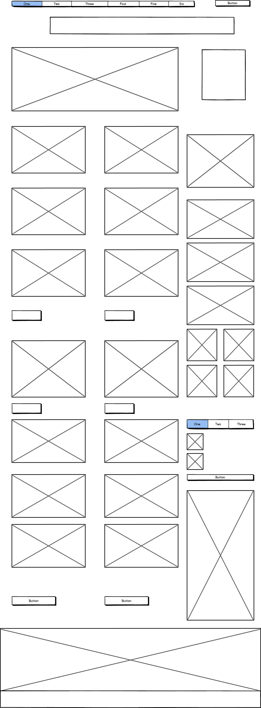

I did some wireframe mockups of my favorites sites described in my earlier post. I used Balsamiq to create the mockups.
Rdio
Rdio is a streaming music site offering a huge amount of music for listeners to add to their collection. The site's visual challenge is to keep their content organized and easily navigable without overwhelming the user.
Wayfair
Wayfair is a home furnishings and decor shopping site that offers limited time special Daily Sales along with their regular inventory. The site's challenge is to keep their content easily navigable to keep customers shopping.
IkeaHacker
IkeaHacker provides instructions for DIY rebuilds and reinventions of many Ikea products. The site's visual challenge is to keep the user focused on the posts in the midst of several advertisements.